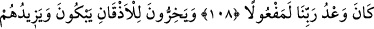

EN GÜZEL İSİMLER
O’NUNDUR
105. Biz Kur’ân’ı hak olarak indirdik; o da hakkı getirdi. Seni de ancak
müjdeleyici ve uyarıcı olarak gönderdik.
106. Biz onu, Kur’an olarak, insanlara dura dura okuyasın diye (âyet âyet, sûre
sûre) ayırdık; ve onu peyderpey indirdik.
107. De ki: Siz ona ister inanın, ister inanmayın; şu bir gerçek ki, bundan önce
kendilerine ilim verilen kimselere o (Kur’an) okununca, derhal yüz üstü secdeye
kapanırlar.
108. Ve derlerdi ki: Rabbimizi tesbih ederiz. Rabbimizin vaadi mutlaka yerine
getirilir.
109. Ağlayarak yüz üstü yere kapanırlar. (Kur’an okumak) onların saygısını
artırır.
110. De ki: “İster Allah deyin, ister Rahman deyin. Hangisini deseniz olur. Çünkü
en güzel isimler O’na hastır.” Namazında yüksek sesle okuma; onda sesini fazla da
kısma; ikisinin arası bir yol tut.
111. Çocuk edinmeyen, hâkimiyette ortağı bulunmayan, âcizlikten ötürü bir dosta
da ihtiyacı olmayan Allah’a hamd ederim” de ve tekbir getirerek O’nun şanını
yücelt!
“Biz Kur’ân’ı hak olarak indirdik; o da hak ile indi.” Yâni biz ancak Kur’an’ın